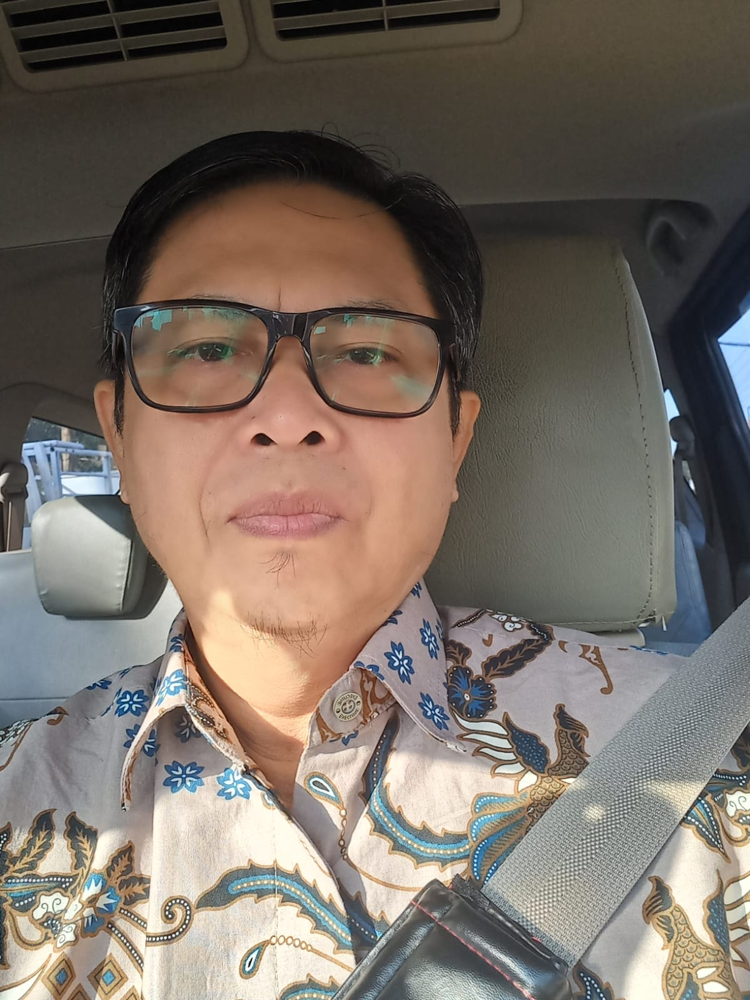

Prof. Dr. Ir. I Gede Puja Astawa received his B.S. and M.S. degrees from Institut Teknologi Sepuluh Nopember Surabaya (ITS), Indonesia in 1993 and 2006,respectively. He received his Ph.D. degree from the Nara Institute of Science and Technology (NAIST), Japan, in 2012. He is currently with the Politeknik Elektronika Negeri Surabaya (PENS), where he serves as a Professor in the Department of Electrical Engineering. His research interests in wireless communications, signal processing include OFDM and MIMO systems, physical-layer security, peak-to-average power ratio (PAPR) reduction techniques, and real-time experimental validation using SDR platforms.
Email : puja@pens.ac.id
Institution : Politeknik Elektronika Negeri Surabaya